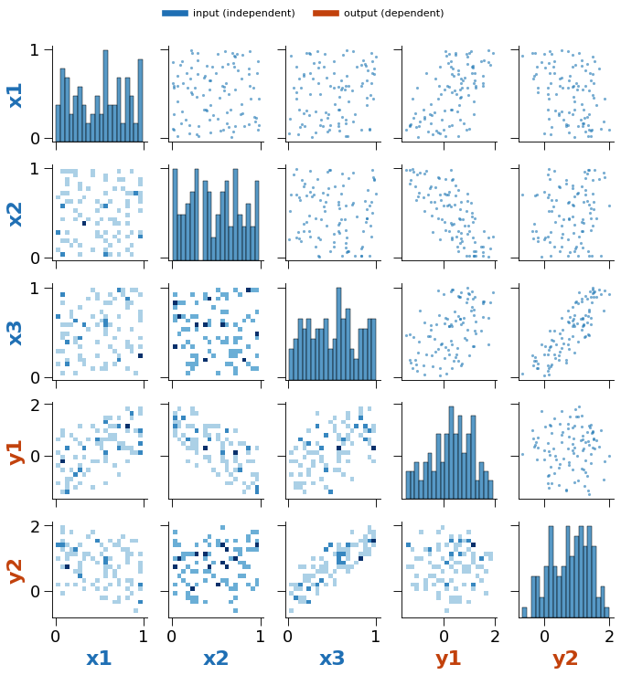
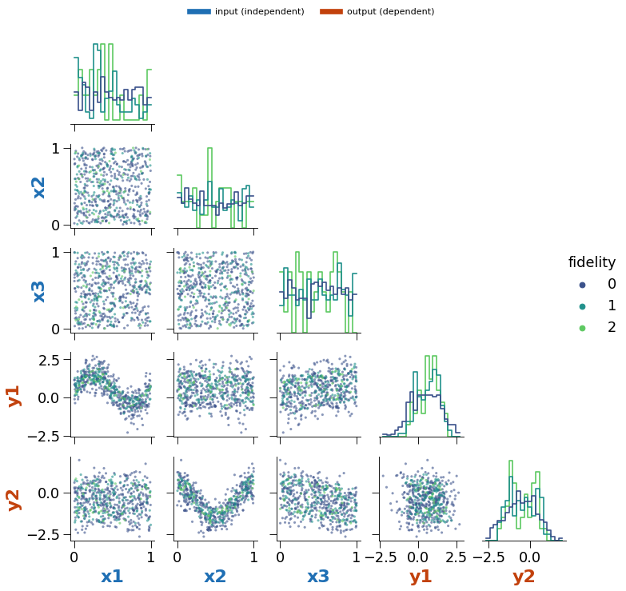
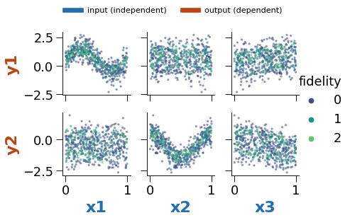

Pair Plots in Reports¶
Whether the HTML reports should include a pair-plot matrix like the one on the “Example Datasets” page, how large an input it can handle, and which options to build in.
Measured 2026-10-26 on fix-wheel-and-increase-tests (3a0e00d).
Recommendation¶
Add it, opt-in per run, in a “fast” form, with hard limits. A pair plot is the quickest way to see the design (how the inputs were sampled) next to the response (which inputs drive which outputs), and nothing in the reports does that today. The UI’s version should not be copied as-is: its KDE panels make the run time grow with the number of rows, and on this machine a 4-variable plot of 20,000 rows took 82 s.
Setting |
Value |
Why |
|---|---|---|
Panels |
Scatter above the diagonal, 2-D histogram below, histogram on the diagonal; no KDE |
Time then depends on the number of panels only, not on rows |
Rows plotted |
At most 1,000, sampled (stratified by fidelity level when there is one) |
Beyond ~1,000 points the picture does not change; the PNG does |
Variables |
Inputs and outputs together, at most 10 for the full matrix |
≤ 20 s and ~1.3 MB per image here; 12 is the hard ceiling |
Above 10 variables |
Switch to the outputs-vs-inputs grid ( |
Cost grows with the square of the variable count |
GUI control |
Radio: Off / Fast (default) / Full (with KDE); Full limited to 8 variables and a 1,000-row sample |
The user decides; the report never waits on a plot they did not ask for |
What Exists Today¶
The “Example Datasets” page (
multioutreg/gui/pages/07_Other_Dataset_Examples.py) draws a seabornPairGridper dataset: scatter above the diagonal, filled KDE below, histogram + KDE on the diagonal, over every numeric column and every row.multioutreg/figures/doe_plots.make_doe_plotis the same grid on a 200-row sample. It is imported bygui/grid_search_core.pyandgui/Grid_Search_Surrogate_Models.py, but every call is commented out.No report template or report generator includes a pair plot. The reports’
sampling_other_plotsandother_plotslists render any{img_b64, title, caption}item, so no template change is needed to add one.
Benchmark¶
Each case ran in a fresh process with a 90 s timeout, built the grid on
synthetic data (inputs uniform, outputs linear in the inputs plus noise) and
encoded it as a PNG the way safe_plot_b64 does (default dpi,
bbox_inches="tight"). Times include the PNG encode, which is about half of the
total. Machine: 2014 MacBook Pro, Intel i7-4870HQ, one thread
(OMP_NUM_THREADS=1), Python 3.9, matplotlib 3.8.2, seaborn 0.12. A current
laptop should be 2–3× faster; the limits above leave room for slower servers.
Fast variant (scatter / 2-D histogram / histogram, rows capped at 1,000,
height=1.6). Cells are total seconds, then base64 size of the PNG.
Variables \ rows |
100 |
1,000 |
20,000 |
|---|---|---|---|
2 |
1.7 s, 16 KB |
0.9 s, 36 KB |
1.5 s, 20 KB |
4 |
4.1 s, 51 KB |
3.2 s, 156 KB |
3.4 s, 142 KB |
6 |
6.9 s, 95 KB |
7.5 s, 429 KB |
7.5 s, 429 KB |
8 |
11.6 s, 158 KB |
12.1 s, 803 KB |
13.1 s, 799 KB |
10 |
18.7 s, 242 KB |
18.4 s, 1.3 MB |
18.4 s, 1.3 MB |
12 |
26.0 s, 338 KB |
26.2 s, 1.9 MB |
25.3 s, 1.9 MB |
16 |
46.4 s, 569 KB |
47.0 s, 3.4 MB |
47.4 s, 3.4 MB |
20 |
73.8 s, 870 KB |
83.1 s, 5.5 MB |
75.6 s, 5.4 MB |
30 |
> 90 s (timeout) |
— |
— |
Time is about 0.18 s per panel (n_vars² panels), whatever the row count, and
peak memory stayed under 560 MB.
UI variant (the “Example Datasets” grid: scatter / filled KDE / histogram +
KDE, all rows, default height=2.5). “—” means skipped because a smaller case
had already timed out.
Variables \ rows |
100 |
500 |
1,000 |
5,000 |
20,000 |
|---|---|---|---|---|---|
2 |
0.8 s, 32 KB |
1.1 s, 44 KB |
1.4 s, 70 KB |
3.6 s, 96 KB |
12.2 s, 64 KB |
4 |
3.4 s, 105 KB |
5.4 s, 182 KB |
6.8 s, 279 KB |
21.4 s, 428 KB |
82.2 s, 458 KB |
6 |
12.4 s, 203 KB |
17.4 s, 433 KB |
17.1 s, 667 KB |
51.7 s, 1.2 MB |
> 90 s |
8 |
14.4 s, 343 KB |
22.6 s, 764 KB |
30.7 s, 1.2 MB |
> 90 s |
— |
10 |
22.3 s, 532 KB |
34.7 s, 1.2 MB |
47.0 s, 1.9 MB |
— |
— |
12 |
33.4 s, 768 KB |
49.3 s, 1.7 MB |
68.7 s, 2.7 MB |
— |
— |
16 |
62.5 s, 1.3 MB |
> 90 s |
— |
— |
— |
20 |
> 90 s |
— |
— |
— |
— |
The KDE panels make this one grow with rows as well as panels: at 1,000 rows it is 2–3× slower than the fast variant, and at 4 variables it goes from 3 s (100 rows) to 82 s (20,000 rows). A “Full” option is reasonable up to about 8 variables on a sample of at most 1,000 rows (≤ 31 s here).
make_doe_plot is the UI grid on 200 rows, so it sits between the 100- and
500-row columns of the table above.
Nothing crashed: every failure was a timeout. The limits come from time and report size (every image is base64-embedded in the HTML), not from memory.
Options¶
Prototype code for all of these is in the appendix. Each image below is a rendered example.
Colour labels by role¶
Input (independent) axis labels in blue, output (dependent) labels in orange, with a key above the grid. Inputs are always listed first, so the input-vs-input block (the design) is the top-left square and the output-vs-input rows sit under it.

Colour points by fidelity level¶
For multi-fidelity data, pass the fidelity column as the hue instead of
plotting it as a variable. (The UI’s multi-fidelity example currently plots
fidelity_level as an ordinary numeric column, which gives a useless row of
three stripes.)
Levels are drawn lowest first, so the scarce high-fidelity points end up on top.
The palette is sequential (viridis), with level 0 (lowest fidelity) darkest, so colour order matches fidelity order.
The diagonal uses step histograms normalised per level, so a level with 40 points is not flattened by one with 400.
Row sampling is stratified by level so that capping rows never removes a level.

Corner (lower triangle only)¶
corner=True drops the mirrored upper triangle, roughly halving the time. It
suits the fidelity view, where the lower panels already carry the scatter.
Outputs vs inputs¶
PairGrid(x_vars=inputs, y_vars=outputs) draws only the n_out × n_in panels
that show response behaviour. With 8 inputs and 2 outputs that is 16 panels
instead of 100. It is the fallback when the full matrix is over the limit.

Smaller files¶
rasterized=True on the scatter layers and a lower dpi (80) for the report
image keep a 10-variable plot well under 1 MB.
Handling Slow Plots¶
The report should never wait on a pair plot nobody asked for, and should never fail because of one.
Radio button, default Fast. On the grid-search and multi-fidelity pages, add Pair plot in report: Off / Fast / Full (KDE). With Off the report is built exactly as today.
Check the cost before drawing. Interrupting matplotlib mid-draw is not reliable, so estimate first from the table above: Fast costs about 0.18 s × panels; Full also grows with rows. If the estimate is over budget, fall back to the outputs-vs-inputs grid. If that is still over, skip and put one line in the report (“Pair plot skipped: 14 variables, limit 10”). The user is not stopped and the report is never empty.
Build it after the report. Render and offer the report download first, then draw the pair plot and re-render the HTML with it added (
st.session_statealready keeps the run’s results across reruns). The download is available after the model run, not after the plot.Never fail the report. Wrap the call in
safe_plot_b64, which already turns an exception into a small error image.
A hard timeout (drawing in a subprocess and killing it) would also work, but it costs a process spawn and a data copy on every run, and the cost estimate makes it unnecessary.
Wiring It In¶
generate_html_report(gui/grid_search_core.py,report/auto_detect_report.py, and the multi-fidelity page) receivesX_train(possibly already PCA-transformed) andy_test, but not the raw frame. Add one optional argument, e.g.pair_plot_b64: str | None, built by the page from the cleaned training frame and the selected input, output and fidelity columns. Append it tosampling_other_plotswhen it is set.Put the plotting function next to
make_doe_plotinmultioutreg/figures/doe_plots.py(or replace it) with argumentsinput_cols,output_cols,fidelity_col=None,layout="full"|"corner"|"io",max_rows=1000,max_vars=10.Tests: role colours on labels, stratified sampling keeps every level, the
max_varsfallback and skip paths, and a timing guard on a small grid.
Fidelity Numbering¶
The fidelity colouring assumes the package’s convention: level 0 is the
lowest fidelity and the last level is the highest. This matches Kennedy &
O’Hagan (2000), Le Gratiet & Garnier (2014), Perdikaris et al. (2017), Cutajar
et al. (2019) and Takeno et al. (2020) (all ascending, 1-based), and SMT’s MFK,
Emukit and continuous-fidelity BO (Wu et al. 2020: “1 is the highest fidelity
and 0 the lowest”), all 0-based.
Benchmark sources number the other way: Mainini et al. (2022) list levels “from 1 highest fidelity to 4 lowest”, and all 49 BenchmarkFcns multi-fidelity functions return the high fidelity in column 0. Reverse their order when porting. Checking this turned up two problems, both fixed on this branch:
multioutreg.active.benchmarkshad the heterogeneous function’s levels swapped, inherited from BenchmarkFcns (whoseheterogeneouslabels Mainini’sf_1as the low fidelity, against both the paper and its own high-fidelity-first layout). The port now follows the paper.The multi-fidelity page sorted numeric levels as text, so with 11 or more levels the default order was
0, 1, 10, 2, …and the wrong level was treated as the highest. Numeric levels now sort numerically.
examples/mf_surrogates.ipynb now names the Forrester levels f0–f3
(lowest to highest) instead of Mainini’s f1–f4 (highest to lowest).
Appendix: Prototype¶
import seaborn as sns
from matplotlib.lines import Line2D
INPUT_COLOR, OUTPUT_COLOR = "#1f6fb4", "#c2410c"
def make_pair_plot(df, input_cols, output_cols, fidelity_col=None, layout="full",
max_rows=1000, max_vars=12, height=1.8, seed=0):
"""layout: "full" (n x n), "corner" (lower triangle), "io" (outputs vs inputs)."""
cols = list(input_cols) + list(output_cols)
if len(cols) > max_vars:
raise ValueError(f"{len(cols)} variables > max_vars={max_vars}")
sub = df[cols + ([fidelity_col] if fidelity_col else [])]
if len(sub) > max_rows:
if fidelity_col: # stratified, so no level disappears
frac = max_rows / len(sub)
sub = sub.groupby(fidelity_col, group_keys=False).apply(
lambda g: g.sample(max(1, round(len(g) * frac)), random_state=seed))
else:
sub = sub.sample(max_rows, random_state=seed)
hue_kw = {}
if fidelity_col:
levels = sorted(sub[fidelity_col].unique()) # 0 = lowest fidelity
sub = sub.assign(**{fidelity_col: sub[fidelity_col].astype(str)})
hue_kw = dict(hue=fidelity_col, hue_order=[str(l) for l in levels],
palette=sns.color_palette("viridis", len(levels)))
scatter = dict(s=8, alpha=0.6, linewidth=0, rasterized=True)
if layout == "io":
g = sns.PairGrid(sub, x_vars=list(input_cols), y_vars=list(output_cols),
height=height, **hue_kw)
g.map(sns.scatterplot, **scatter)
else:
g = sns.PairGrid(sub, vars=cols, corner=(layout == "corner"),
diag_sharey=False, height=height, **hue_kw)
if layout == "full":
g.map_upper(sns.scatterplot, **scatter)
if fidelity_col:
g.map_lower(sns.scatterplot, **scatter)
g.map_diag(sns.histplot, element="step", fill=False,
common_norm=False, stat="density", bins=20)
else:
g.map_lower(sns.histplot, bins=20, cmap="Blues")
g.map_diag(sns.histplot, bins=20)
role = {c: INPUT_COLOR for c in input_cols} | {c: OUTPUT_COLOR for c in output_cols}
for ax in g.axes.flat:
if ax is None:
continue
for lab in (ax.xaxis.label, ax.yaxis.label):
if lab.get_text() in role:
lab.set_color(role[lab.get_text()])
lab.set_fontweight("bold")
g.fig.legend(handles=[Line2D([], [], color=INPUT_COLOR, lw=6, label="input (independent)"),
Line2D([], [], color=OUTPUT_COLOR, lw=6, label="output (dependent)")],
loc="lower center", bbox_to_anchor=(0.5, 1.0), ncol=2, frameon=False)
if fidelity_col:
g.add_legend(title="fidelity")
return g